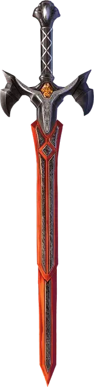

Вострый меч
Vorpal Sword
Оружие (Глефа, Двуручный меч, Длинный меч или Скимитар), легендарное (требуется настройка)

Рекомендованная стоимость 200 000 ЗМ
Вы обладаете бонус +3 к броскам атаки и урона, совершаемым с этим магическим оружием. Кроме того, оружие игнорирует Сопротивление Рубящему урону.
Когда вы используете это оружие для атаки по существу с хотя бы одной головой, и на к20 броска атаки выпадает 20, вы отсекаете цели одну из её голов. Существо погибает, если не может выжить без утраченной головы. Существо невосприимчиво к этому эффекту, если оно обладает Иммунитетом к Рубящему урону, если у него нет головы, если ему не нужна голова, или если Мастер решит, что существо слишком велико, чтобы его голову можно было отсечь этим оружием. Если существо невосприимчиво к этому эффекту, вместо этого оно получает 30 дополнительного Рубящего урона от этого попадания. Если у существа есть Легендарное сопротивление, оно может потратить одно ежедневное использование этого свойства, чтобы избежать потери головы, вместо того получая этот дополнительный урон.